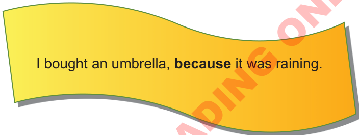
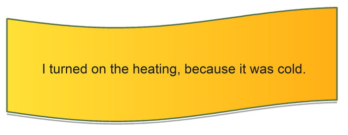

Activity 5.2: Expressing reason using ‘because’
Activity 5.2: Expressing reason using ‘because’
(a) Read the following pairs of sentences.
Then, say/sign which sentence expresses the reason of the action presented.
(a) Read the following pairs of sentences. Then, say/sign which sentence expresses the reason of the action presented.
1. It was raining.
2. I bought an umbrella.

I bought an umbrella, because it was raining.
1. I turned on the heating.
2. It was cold.

I turned on the heating, because it was cold.
(b) Use ‘because’ to give the reasons for the following.
1. Why do people go to hospital?
2. Why do people eat?
3. Why are some children punished?
4. Why do dogs bark?
5. Why do people build houses?